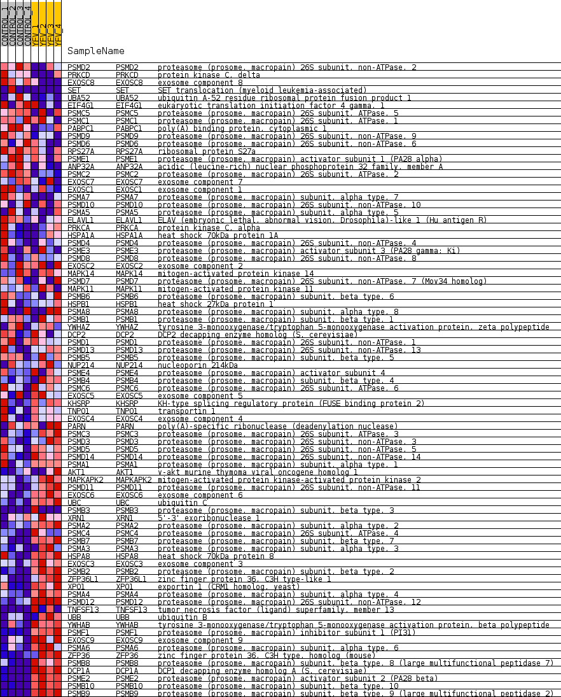
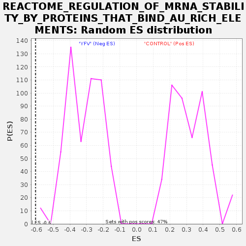

Profile of the Running ES Score & Positions of GeneSet Members on the Rank Ordered List
| Dataset | MATRIZ_GSE99081_collapsed_to_symbols.gsea_CLASE_99081.cls#CONTROL_versus_YFV |
| Phenotype | gsea_CLASE_99081.cls#CONTROL_versus_YFV |
| Upregulated in class | YFV |
| GeneSet | REACTOME_REGULATION_OF_MRNA_STABILITY_BY_PROTEINS_THAT_BIND_AU_RICH_ELEMENTS |
| Enrichment Score (ES) | -0.60645294 |
| Normalized Enrichment Score (NES) | -1.9218309 |
| Nominal p-value | 0.0 |
| FDR q-value | 0.0163634 |
| FWER p-Value | 0.023 |
| SYMBOL | TITLE | RANK IN GENE LIST | RANK METRIC SCORE | RUNNING ES | CORE ENRICHMENT | |
|---|---|---|---|---|---|---|
| 1 | PSMD2 | proteasome (prosome, macropain) 26S subunit, non-ATPase, 2 | 711 | 0.738 | -0.0244 | No |
| 2 | PRKCD | protein kinase C, delta | 992 | 0.646 | -0.0246 | No |
| 3 | EXOSC8 | exosome component 8 | 1336 | 0.565 | -0.0308 | No |
| 4 | SET | SET translocation (myeloid leukemia-associated) | 1620 | 0.506 | -0.0349 | No |
| 5 | UBA52 | ubiquitin A-52 residue ribosomal protein fusion product 1 | 1969 | 0.488 | -0.0435 | No |
| 6 | EIF4G1 | eukaryotic translation initiation factor 4 gamma, 1 | 2766 | 0.372 | -0.0829 | No |
| 7 | PSMC5 | proteasome (prosome, macropain) 26S subunit, ATPase, 5 | 3127 | 0.329 | -0.0964 | No |
| 8 | PSMC1 | proteasome (prosome, macropain) 26S subunit, ATPase, 1 | 3697 | 0.267 | -0.1245 | No |
| 9 | PABPC1 | poly(A) binding protein, cytoplasmic 1 | 3710 | 0.265 | -0.1182 | No |
| 10 | PSMD9 | proteasome (prosome, macropain) 26S subunit, non-ATPase, 9 | 3732 | 0.263 | -0.1125 | No |
| 11 | PSMD6 | proteasome (prosome, macropain) 26S subunit, non-ATPase, 6 | 3986 | 0.243 | -0.1217 | No |
| 12 | RPS27A | ribosomal protein S27a | 4134 | 0.232 | -0.1247 | No |
| 13 | PSME1 | proteasome (prosome, macropain) activator subunit 1 (PA28 alpha) | 4391 | 0.212 | -0.1349 | No |
| 14 | ANP32A | acidic (leucine-rich) nuclear phosphoprotein 32 family, member A | 4731 | 0.181 | -0.1511 | No |
| 15 | PSMC2 | proteasome (prosome, macropain) 26S subunit, ATPase, 2 | 4826 | 0.173 | -0.1523 | No |
| 16 | EXOSC7 | exosome component 7 | 5022 | 0.157 | -0.1602 | No |
| 17 | EXOSC1 | exosome component 1 | 5080 | 0.151 | -0.1597 | No |
| 18 | PSMA7 | proteasome (prosome, macropain) subunit, alpha type, 7 | 5238 | 0.134 | -0.1659 | No |
| 19 | PSMD10 | proteasome (prosome, macropain) 26S subunit, non-ATPase, 10 | 5332 | 0.127 | -0.1683 | No |
| 20 | PSMA5 | proteasome (prosome, macropain) subunit, alpha type, 5 | 5659 | 0.102 | -0.1857 | No |
| 21 | ELAVL1 | ELAV (embryonic lethal, abnormal vision, Drosophila)-like 1 (Hu antigen R) | 5662 | 0.101 | -0.1832 | No |
| 22 | PRKCA | protein kinase C, alpha | 6084 | 0.069 | -0.2074 | No |
| 23 | HSPA1A | heat shock 70kDa protein 1A | 6124 | 0.066 | -0.2080 | No |
| 24 | PSMD4 | proteasome (prosome, macropain) 26S subunit, non-ATPase, 4 | 6348 | 0.049 | -0.2205 | No |
| 25 | PSME3 | proteasome (prosome, macropain) activator subunit 3 (PA28 gamma; Ki) | 6661 | 0.029 | -0.2391 | No |
| 26 | PSMD8 | proteasome (prosome, macropain) 26S subunit, non-ATPase, 8 | 6710 | 0.026 | -0.2414 | No |
| 27 | EXOSC2 | exosome component 2 | 6756 | 0.023 | -0.2435 | No |
| 28 | MAPK14 | mitogen-activated protein kinase 14 | 6828 | 0.020 | -0.2474 | No |
| 29 | PSMD7 | proteasome (prosome, macropain) 26S subunit, non-ATPase, 7 (Mov34 homolog) | 6854 | 0.018 | -0.2485 | No |
| 30 | MAPK11 | mitogen-activated protein kinase 11 | 7000 | 0.011 | -0.2572 | No |
| 31 | PSMB6 | proteasome (prosome, macropain) subunit, beta type, 6 | 7048 | 0.008 | -0.2599 | No |
| 32 | HSPB1 | heat shock 27kDa protein 1 | 7117 | 0.005 | -0.2639 | No |
| 33 | PSMA8 | proteasome (prosome, macropain) subunit, alpha type, 8 | 9584 | -0.007 | -0.4164 | No |
| 34 | PSMB1 | proteasome (prosome, macropain) subunit, beta type, 1 | 9745 | -0.014 | -0.4259 | No |
| 35 | YWHAZ | tyrosine 3-monooxygenase/tryptophan 5-monooxygenase activation protein, zeta polypeptide | 9782 | -0.016 | -0.4277 | No |
| 36 | DCP2 | DCP2 decapping enzyme homolog (S. cerevisiae) | 10098 | -0.030 | -0.4464 | No |
| 37 | PSMD1 | proteasome (prosome, macropain) 26S subunit, non-ATPase, 1 | 10102 | -0.030 | -0.4458 | No |
| 38 | PSMD13 | proteasome (prosome, macropain) 26S subunit, non-ATPase, 13 | 10422 | -0.053 | -0.4642 | No |
| 39 | PSMB5 | proteasome (prosome, macropain) subunit, beta type, 5 | 10473 | -0.058 | -0.4657 | No |
| 40 | NUP214 | nucleoporin 214kDa | 10733 | -0.078 | -0.4797 | No |
| 41 | PSME4 | proteasome (prosome, macropain) activator subunit 4 | 10799 | -0.085 | -0.4814 | No |
| 42 | PSMB4 | proteasome (prosome, macropain) subunit, beta type, 4 | 10839 | -0.088 | -0.4815 | No |
| 43 | PSMC6 | proteasome (prosome, macropain) 26S subunit, ATPase, 6 | 11010 | -0.102 | -0.4893 | No |
| 44 | EXOSC5 | exosome component 5 | 11211 | -0.121 | -0.4985 | No |
| 45 | KHSRP | KH-type splicing regulatory protein (FUSE binding protein 2) | 11241 | -0.124 | -0.4970 | No |
| 46 | TNPO1 | transportin 1 | 11299 | -0.129 | -0.4971 | No |
| 47 | EXOSC4 | exosome component 4 | 11388 | -0.137 | -0.4989 | No |
| 48 | PARN | poly(A)-specific ribonuclease (deadenylation nuclease) | 11480 | -0.146 | -0.5006 | No |
| 49 | PSMC3 | proteasome (prosome, macropain) 26S subunit, ATPase, 3 | 11528 | -0.149 | -0.4996 | No |
| 50 | PSMD3 | proteasome (prosome, macropain) 26S subunit, non-ATPase, 3 | 11846 | -0.178 | -0.5145 | No |
| 51 | PSMD5 | proteasome (prosome, macropain) 26S subunit, non-ATPase, 5 | 11911 | -0.185 | -0.5135 | No |
| 52 | PSMD14 | proteasome (prosome, macropain) 26S subunit, non-ATPase, 14 | 11924 | -0.186 | -0.5093 | No |
| 53 | PSMA1 | proteasome (prosome, macropain) subunit, alpha type, 1 | 12891 | -0.287 | -0.5615 | No |
| 54 | AKT1 | v-akt murine thymoma viral oncogene homolog 1 | 13167 | -0.324 | -0.5699 | No |
| 55 | MAPKAPK2 | mitogen-activated protein kinase-activated protein kinase 2 | 13186 | -0.326 | -0.5624 | No |
| 56 | PSMD11 | proteasome (prosome, macropain) 26S subunit, non-ATPase, 11 | 13564 | -0.374 | -0.5758 | No |
| 57 | EXOSC6 | exosome component 6 | 13717 | -0.396 | -0.5747 | No |
| 58 | UBC | ubiquitin C | 14182 | -0.479 | -0.5907 | No |
| 59 | PSMB3 | proteasome (prosome, macropain) subunit, beta type, 3 | 14438 | -0.500 | -0.5932 | Yes |
| 60 | XRN1 | 5'-3' exoribonuclease 1 | 14629 | -0.524 | -0.5910 | Yes |
| 61 | PSMA2 | proteasome (prosome, macropain) subunit, alpha type, 2 | 14672 | -0.535 | -0.5794 | Yes |
| 62 | PSMC4 | proteasome (prosome, macropain) 26S subunit, ATPase, 4 | 14766 | -0.557 | -0.5704 | Yes |
| 63 | PSMB7 | proteasome (prosome, macropain) subunit, beta type, 7 | 14794 | -0.565 | -0.5570 | Yes |
| 64 | PSMA3 | proteasome (prosome, macropain) subunit, alpha type, 3 | 14958 | -0.609 | -0.5510 | Yes |
| 65 | HSPA8 | heat shock 70kDa protein 8 | 15002 | -0.625 | -0.5370 | Yes |
| 66 | EXOSC3 | exosome component 3 | 15113 | -0.658 | -0.5264 | Yes |
| 67 | PSMB2 | proteasome (prosome, macropain) subunit, beta type, 2 | 15120 | -0.662 | -0.5091 | Yes |
| 68 | ZFP36L1 | zinc finger protein 36, C3H type-like 1 | 15216 | -0.698 | -0.4965 | Yes |
| 69 | XPO1 | exportin 1 (CRM1 homolog, yeast) | 15270 | -0.722 | -0.4806 | Yes |
| 70 | PSMA4 | proteasome (prosome, macropain) subunit, alpha type, 4 | 15508 | -0.833 | -0.4731 | Yes |
| 71 | PSMD12 | proteasome (prosome, macropain) 26S subunit, non-ATPase, 12 | 15525 | -0.844 | -0.4517 | Yes |
| 72 | TNFSF13 | tumor necrosis factor (ligand) superfamily, member 13 | 15573 | -0.864 | -0.4317 | Yes |
| 73 | UBB | ubiquitin B | 15642 | -0.918 | -0.4115 | Yes |
| 74 | YWHAB | tyrosine 3-monooxygenase/tryptophan 5-monooxygenase activation protein, beta polypeptide | 15679 | -0.948 | -0.3886 | Yes |
| 75 | PSMF1 | proteasome (prosome, macropain) inhibitor subunit 1 (PI31) | 15701 | -0.986 | -0.3637 | Yes |
| 76 | EXOSC9 | exosome component 9 | 15703 | -0.988 | -0.3375 | Yes |
| 77 | PSMA6 | proteasome (prosome, macropain) subunit, alpha type, 6 | 15762 | -1.053 | -0.3131 | Yes |
| 78 | ZFP36 | zinc finger protein 36, C3H type, homolog (mouse) | 15835 | -1.191 | -0.2860 | Yes |
| 79 | PSMB8 | proteasome (prosome, macropain) subunit, beta type, 8 (large multifunctional peptidase 7) | 16014 | -1.655 | -0.2530 | Yes |
| 80 | DCP1A | DCP1 decapping enzyme homolog A (S. cerevisiae) | 16050 | -1.833 | -0.2065 | Yes |
| 81 | PSME2 | proteasome (prosome, macropain) activator subunit 2 (PA28 beta) | 16061 | -1.905 | -0.1566 | Yes |
| 82 | PSMB10 | proteasome (prosome, macropain) subunit, beta type, 10 | 16150 | -2.694 | -0.0905 | Yes |
| 83 | PSMB9 | proteasome (prosome, macropain) subunit, beta type, 9 (large multifunctional peptidase 2) | 16195 | -3.614 | 0.0027 | Yes |

